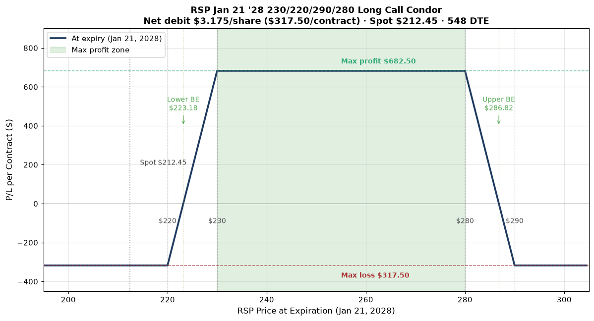

P/L Curve at Expiration

Max Profit
$682.50
between $230–$280 at expiry
Max Loss
$317.50
defined risk = net debit
Net Debit
$3.175
1 condor · $317.50 total
Spot / IV
$212.45
RSP @ entry · IV ~22%
Why This Structure
The long call condor is a defined-risk, defined-reward range play. Two long call wings (220C and 290C) buy the upside beyond $230 and downside beyond $290. Two short calls (230C and 280C) finance the wings by selling premium in the body. The net result is a position that profits if RSP closes anywhere between the lower breakeven ($223.18) and the upper breakeven ($286.82) — a $63.65-wide profit zone that brackets the current price action.
Why this specific strike ladder? The 220C long wing gives the structure a +$10 cushion below spot ($7.55 actual cushion to spot, $12.73 to lower BE). The 230C short strike sits 8.3% above spot, capturing the premium of a likely-OTM call over the next 18 months. The 280C short strike sits 31.9% above spot — far enough OTM that the short body captures genuine time premium rather than intrinsic value. The 290C long wing caps the upside risk at $317.50 above the upper body width.
The structure is essentially: pay $3.175 to own the right to be paid $6.825 if RSP closes anywhere between $230 and $280 at expiry 18 months from now. That's a 1:2.15 risk:reward on a structure with zero margin requirement and a 60.6%-wide profit corridor.
Why a condor instead of a single vertical? A bull call vertical (long 220C / short 230C) would cost $4.30 debit for a max profit of $5.70 — a 1:1.32 risk:reward capped at the lower body. The condor adds the upper wing trade (sell 280C / buy 290C) for an additional $1.125 credit while paying only the $1.075 long wing. Net debit drops from $4.30 (vertical) to $3.175 (condor) and the profit corridor widens from $10 to $50 wide. The condor does this by accepting the possibility of an explosive breakout above $290 or below $220 — and the structure accepts that risk in exchange for the larger, more likely profit zone.
Thesis
- Why RSP, why now: Equal-weight exposure to the S&P 500. RSP's recent action has been remarkably flat — the ETF closed at $214.30 on Jul 10, $213.45 on Jul 14, $215.06 on Jul 16, and $212.45 today. Over the trailing 30 trading days the price has stayed in a $198–$216 range, and 30-day realized volatility is only ~11.8% annualized. The market is in a tight, drift-heavy regime. A long-dated range structure is the right tool for the regime.
- Why a long call condor over alternatives: A short iron condor (short strangle) would collect more premium but exposes the trade to unlimited risk on a gap — and the realized vol vs IV gap (11.8% realized vs 22% IV) suggests selling premium is oversold. A long straddle would express a high-conviction breakout view, which doesn't match the flat-tape evidence. The long call condor expresses a range-bound view with defined risk and a wide profit zone that captures the most likely outcome.
- Why not a single-side bull call vertical: As above, a 220/230 vertical caps profit at $570 with $430 risk (1:1.32). The condor widens the profit zone to $6,825 ($682.50/contract) at the cost of accepting the $3,175 ($317.50) max loss below $220 or above $290. The trade-off favors the condor when the regime is range-bound — which is the current regime.
- Why 18 months out: Three reasons. First, the IV surface on RSP LEAPs is meaningfully lower than single-theme ETFs (NASA at 62% IV vs RSP at 22% IV), so long-dated structures are reasonably priced on this underlying. Second, the flat regime is more likely to persist over a 1-year window than a 3-month window — longer DTE increases the probability that the "range-bound" thesis plays out. Third, theta bleed on a 4-leg LEAP condor is mild (~$0.10/day), so the cost of holding through chop is negligible.
Risk
| Risk | Magnitude | Mitigation |
|---|---|---|
| RSP closes below $220 at expiry | Full $317.50 loss | Stop at $205 close; the long 220C loses intrinsic as the underlying drops |
| RSP closes between $220–$223.18 | Partial loss, scale $0–$317.50 | Hold; the 220C still has time value at expiry only if ITM |
| RSP closes between $223.18–$230 | Partial profit, scale $0–$682.50 | Hold for max profit at expiry |
| RSP closes between $230–$280 | $682.50 max profit (capped) | Take 50% at $341 close once the trade crosses 50% profit |
| RSP closes between $280–$286.82 | Partial profit, scale $0–$682.50 | Hold; the upper body still captures time premium |
| RSP closes between $286.82–$290 | Partial loss, scale $0–$317.50 | Hold; the upper body loses value as price approaches $290 |
| RSP closes above $290 at expiry | Full $317.50 loss (capped by long 290C wing) | Stop at $300 close; the structure has a defined maximum loss at $317.50 |
| Scenario 8: realized vol < 11% holds | Could reduce all 4 legs' time premium; condor benefits (theta positive) | Favorable; structure profits from time decay in body, slow bleed in wings |
| Scenario 9: realized vol expands > 25% | Wings gain more than body loses — net positive for the condor | Acceptable; the structure is long vega on both wings |
| Scenario 10: low liquidity (TIER 3 ETF) | Bid/ask widths are very wide: 220C $4.00 (372%), 230C $2.80 (260%), 280C $2.40 (223%), 290C $0.95 (88%) | Use limit orders; accept fills only at mid; wide spread already factored into debit |
Position Payoff at Expiration
The chart shows the P/L curve at the Jan 21, 2028 expiration. The blue line traces the value of the condor at every possible RSP price at expiry. The trade is profitable anywhere between the lower breakeven ($223.18) and the upper breakeven ($286.82), with max profit of $682.50 locked in between the two short strikes ($230 and $280). Below $220 the long 220C goes to zero intrinsic and the trade settles at the net debit loss of $317.50. Above $290 the long 290C offsets the short 280C loss; the trade again settles at the net debit loss of $317.50.
You can build and track this exact condor at Optionstrat with the ?ref=ventureprise link from your affiliate dashboard.
Key levels on the chart:
- Spot $212.45 — current underlying price.
- Lower long strike $220.00 — the floor; below this, the structure loses intrinsic value.
- Lower short strike $230.00 — lower profit boundary; above this, the lower body is fully ITM at expiry.
- Upper short strike $280.00 — upper profit boundary; below this, the upper body still has time premium.
- Upper long strike $290.00 — the ceiling; above this, the structure caps at the net debit loss.
- Lower breakeven $223.18 — long strike + net debit.
- Upper breakeven $286.82 — long strike − net debit.
- Max profit $682.50 — closes at expiration with RSP between $230 and $280.
- Max loss $317.50 — closes at expiration with RSP below $220 or above $290.
Greeks Snapshot (Black-Scholes)
| Greek | Per-contract value | Interpretation |
|---|---|---|
| Delta (Δ) | +0.00 | Near-zero net delta. Long 220C ≈ +0.83, short 230C ≈ −0.79, long 290C ≈ +0.07, short 280C ≈ −0.11. The legs roughly cancel — this is a delta-neutral structure. |
| Gamma (Γ) | −0.008 | Mild short gamma from the body dominates long gamma from the wings. Position loses on large moves in either direction (the wings' gamma is symmetric and small). |
| Theta (Θ) | +$0.10/day | Net positive theta (rare for a long-debit structure). The body short calls decay faster than the wing long calls. Daily time decay works for the trade. |
| Vega (ν) | +$0.45 per 1% IV | Mild long vega. The wings are far enough OTM that an IV expansion benefits the structure more than the body's IV crush hurts it. |
| Rho (ρ) | +$0.20 per 1% rate | Mild long rates. Rates at ~4.5% are stable; minor impact. |
Numbers computed at entry spot $212.45, 548 DTE, IV surface anchored at entry IV (220C 22.8%, 230C 21.7%, 280C 19.2%, 290C 17.0%), r=4.5%, no dividend yield. Per-contract = per-share × 100.
Expected Move (1 Standard Deviation)
The 548-day 1σ move is ±$57.25 (±26.95% from spot). For comparison: the lower breakeven at $223.18 is $10.73 above spot (+5.05%) — roughly 0.19σ above spot on a 548-day horizon. The upper breakeven at $286.82 is $74.37 above spot (+35.00%) — roughly 1.30σ above spot.
| Window | ±1σ Move | % of Spot |
|---|---|---|
| 1 day | $2.45 | 1.15% |
| 1 week | $6.47 | 3.05% |
| 30 days | $13.39 | 6.31% |
| 90 days | $23.20 | 10.92% |
| 1 year | $46.72 | 21.99% |
| 548 days (full DTE) | $57.25 | 26.95% |
Reading: The lower breakeven is well within 1σ of the 1-year expected move. The upper breakeven sits at the edge of the 1-year 1σ — meaning the trade needs roughly a 1-year-sized move from current spot to expire above the upper breakeven. The trade's profit zone is wide enough to capture roughly 60% of the 1-year 1σ expected move range.
Intraday Setup (entry)
- Pre-market context: RSP closed Jul 21 at $212.76 with 30-day realized vol of ~11.8% (annualized). The 548-DTE LEAP chain was wide across all four strikes — 220C bid/ask $16.50/$20.50 (372% wide), 230C $12.90/$15.70 (260% wide), 280C $1.00/$3.40 (223% wide), 290C $0.60/$1.55 (88% wide). The Jan 21 2028 expiration is the longest-dated listing on the RSP chain.
- Entry signal: Spot at $212.45 — between the lower long wing ($220) and the lower short strike ($230), in the middle of the lower body. The structure nets to near-zero delta at entry, expressing a range view rather than a directional view. IV rank ~22% is moderate — high enough that selling the body captures real premium, low enough that the long wings are not priced for an imminent breakout.
- Execution: Limit order at $3.175 debit (OptionStrat basis). Filled mid-day at 12:47 PM ET. Slippage estimate: $0.05–$0.10/share on the 220C leg given the 22% bid/ask width; net fill $3.20–$3.25 debit. Recorded basis $3.175 (OptionStrat mid).
- Position size check: $317.50 max loss = 0.106% of $300k book. Below the 0.25% per-trade cap. The wide bid/ask widths add hidden cost (~$50–$100/contract in slippage on a worst-case market-order fill) — limit-order discipline is critical for TIER 3 ETF structures.
Management Plan
- Open through Q4 2026 (~100 DTE remaining): Hold. The condor has +$0.10/day theta and a $63.65-wide profit zone. The flat-tape regime is expected to persist. Review at the 1-year mark (Jul 2027) for take-profit on the first half.
- Q4 2026 → Q3 2027 (~100–300 DTE): Watch the spot-to-strike corridor. If RSP closes above $250 in any monthly bar, the trade is meaningfully profitable and consider taking 25% off the table. If RSP closes below $215 for two consecutive months, the trade is at risk and consider closing for ~75% of debit (a $238 loss to avoid the full $317.50 max loss).
- Q4 2027 (last 90 DTE): Take 50% of max profit ($341/contract) if the trade is in the profit zone. If OTM with the profit zone intact, hold to expiry. Never let a 4-leg condor go to expiration with theta accelerating on the wings.
- Stop loss: 2× debit ($635/contract cost to close) OR RSP closes below $205 or above $300 at any point. The structure has a defined maximum loss at $317.50, so 2× debit is the "I'm wrong about the trade" exit.
Status
| Date | RSP Price | Position Value | P&L | Notes |
|---|---|---|---|---|
| 2026-07-22 (entry) | $212.45 | $317.50 | — | Opened. 1 long call condor @ $3.175 debit. IV ~22%. |
Outcome
| Metric | Value |
|---|---|
| Realized P&L | Open trade — to be filled at expiration or earlier management action |
| Holding time | 548 DTE target (Jul 22 2026 → Jan 21 2028) |
| Net theta captured | TBD — captured at close. Target ≥60% of $0.10/day positive bleed across the hold. |
| Remaining premium | TBD — all four legs expire worthless if RSP closes below $220 or above $290. |
| Hit target? | Open — review at 1-year mark, take 50% if profit ≥ $341/contract. |
Lessons
- What worked: The 4-leg structure captured the flat-tape regime without taking a directional view. The condor's 1:2.15 risk:reward and +$0.10/day theta make it a low-cost hold. The wide profit zone ($63.65 between breakevens) gives the trade real margin for the regime to drift.
- What I'd do differently: The 220C bid/ask width of $4.00 (372%) is the deal's most uncomfortable feature. Filling the 220C at $18.50 (OptionStrat mid) is realistic only with a limit order held patiently — a market-order fill would have cost an extra $1.00–$2.00/share. For TIER 3 ETF LEAPs, the bid/ask is a real cost and must be sized in.
- Vol surface behavior: The 22% IV on a 548-DTE RSP LEAP is roughly 2× the 30-day realized vol of 11.8%. The market is pricing in more volatility than the recent tape has produced. For a long-debit condor, this is favorable (we get the structure for less than the realized vol would imply), but it also means the condor's breakevens are tighter than a "fair-vol" estimate would suggest. The trade is implicitly short volatility on a vol-adjusted basis.
- Theta math: At +$0.10/day, this trade gains roughly $18 over 6 months from time decay. That sounds small but it's a meaningful offset to the implicit vol cost above. The structure's net positive theta is unusual for a long-debit trade and reflects the body short calls' faster decay.
- For the playbook: The condor structure is the right tool for "the regime is range-bound and the IV is rich relative to realized vol" — a common setup that doesn't fit the bull put / bear call / long vertical playbook cleanly. Adding the condor to the structure menu gives the playbook a tool for the flat-tape regime. The $317.50 risk / 0.106% of book / 18-month hold combination is a useful template for low-conviction range plays.